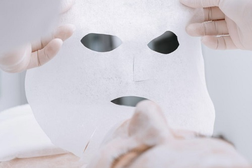
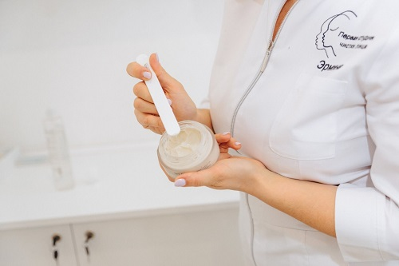

— достойная немецкая марка с полувековой безупречной репутацией, бренд представлен в
эстетический центрах, салонах красоты и медицинских центрах в 50 странах мира.
×

ЧИСТКИ
Механическая
Комбинированная
Атравматическая
Ультразвуковая
Кислотная
×

УХОДЫ
Стоп – акне
Этапы:
Очищающее молочко(падавляет уже на этапе умывания рост пропиопбактерий акне до 50%).
Топизация(тоник для жирной и проблемной кожи с экстрактом гамамелиса и аллатоином).
Нанесение нормализующего концентрата–антисептика с пчелиным маточным молочком,подавляющего
развитие патогенной флоры.
Нанесение очищающей маски–антисептика с коллоидной глиной и ментолом.
Дарсовализация по подсохшей маске(мощное бактерицидное и бактериостатическое
воздействие,восстанавливает кровообращение).
Завершающий уход с кремом себобаланс с маслом лесного ореха, жожоба и скваленом.
Матирование кожи
Уход для устранения жирного блеска на лице и нормализации работы сальных желез.
Гель для проблемной кожи с экстрактом гамамелиса, аминокислотами и витамином С.
Тоник для жирной кожи с экстрактом гамамелиса и аллатоином.
Энзимный пилинг(мягкое атравматическое глубокое очищение с экстрактом папайи, энанаса и салициловой
кислотой.
Очищающая маска (по типу кожи).
Завершающий уход с матирующим кремом с молочными пептидами.
Стоп – стресс
Успокаивающий уход для чувствительной и раздраженной кожи.
Гидрофильное масло(масла макадамин, авакадо, сливы и витамин Е).
Дермальный тоник–спрей с алое вера и кальцием.
Глубокое очищение тоником–эксфолиантом с экстрактом гамамелиса и молочной кислотой.
Успокаивающая маска с экстрактом мальвы, алое вера и центеллой азиатской.
Завершающий уход с дермальным пептидным кремом.
Сияние кожи
Уход для осветления кожи,выравнивание тона и работа с пигментацией.